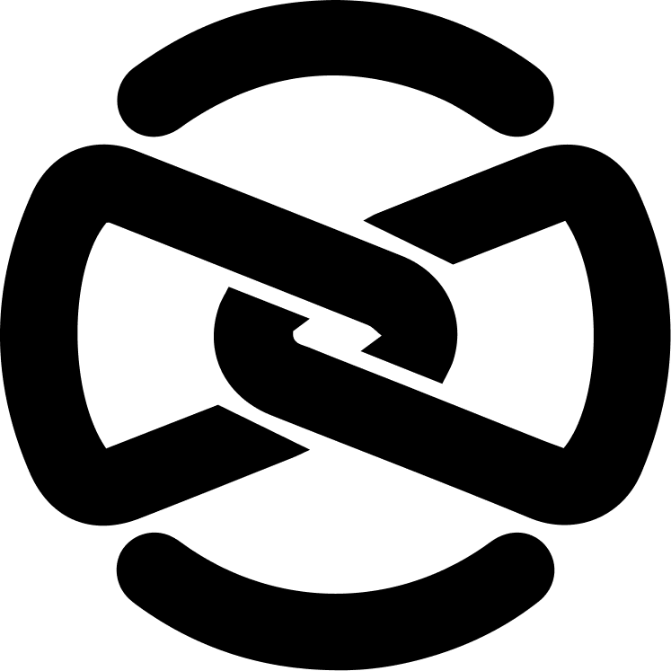

NPort for Mac Buy me a coffee
Buy me a coffee
Network capacity
{{ netUsed }} of {{ netCapacity }}
{{ netNote }}

Version 3.0.2
Up to date
{{ tn.url }}
{{ tn.target }}
⬡ {{ tn.nodeName }}
{{ tn.reqs }} requests
{{ tn.remaining }} left
Requests today
1,284
Median latency
38 ms
Edge region
FRA
:
{{ nodeSuffix }}
{{ availText }}
Equivalent command
$ {{ cliCommand }}
Every control maps to a CLI flag. Copy this into CI, a Makefile, or a teammate's terminal.
Connection{{ s.mark }}
{{ s.label }}
{{ sel.method }}
{{ sel.path }}
{{ sel.status }} {{ sel.statusText }}{{ sel.ms }}{{ sel.size }}{{ sel.ip }}{{ sel.time }}
{{ d.k }}
{{ d.v }}
{{ detailBody }}
Nodes online
{{ nodesOnline }}
Slots available
{{ netFree }}
Best latency
{{ bestPing }}
Relay nodes
{{ discoveryLine }}
{{ n.name }}
{{ n.plan }}
In use
{{ n.api }}
Region
{{ n.region }}
Latency
{{ n.ping }}
Tunnels{{ n.usage }}
How node selection works
Each relay node is an independent Cloudflare account with its own subdomain quota. The control plane keeps the registry and health-checks every node; NPort picks the fastest one with a free slot unless you choose otherwise. Running your own node adds capacity to the pool.
Run your own relay node →
Pinned presets
{{ ps.name }}
{{ ps.detail }}
Recent
{{ h.url }}
:{{ h.port }}
{{ h.reqs }} reqs
{{ h.when }}
Control plane
The control plane keeps the relay-node registry and their quotas — it never carries your traffic. Point it at your own instance, or register a private node so only you can route through it. Saved to ~/.nport/config.json.
Preferences
Supporter account
{{ authHint }}
Already bought a coffee?
Enter the email you donated with. We'll send a one-time code and hide sponsored cards on this machine. No password, no account to manage.
Enter the 6-digit code
Sent to {{ authEmail }}. It expires in 10 minutes.
✓
Signed in as {{ authEmail }}
Supporter since {{ supporterSince }} · sponsored cards are hidden everywhere.
Support
Buy me a coffee
No paid tier. Coffees cover the server bill.
One developer maintains NPort and pays for the infrastructure out of pocket. Buy a coffee and sponsored cards disappear for good — sign in above with the email you paid with.
Buy me a coffee
Powered by Cloudflare
·
MIT licensed
·
Created by Nick — Ngoc Pham
·
Made with ❤️ in Vietnam
Language
Your tunnels, your Cloudflare
NPort runs on Cloudflare's edge. Use the shared backend to start in seconds, or connect your own account and own every hop.
Finder
100%
Tue 14:22
{{ hiddenStatus }}
The window is closed but the tunnels are not. NPort keeps serving from the menu bar — click the icon above to copy a URL, or reopen the full window.
Keep your tunnels running?
{{ closeBody }}
{{ activeCount }} tunnels running
{{ tn.url }}
:{{ tn.port }} · {{ tn.remaining }} left
macOS 26 Tahoe · Windows 11 · Linux·MIT licensed